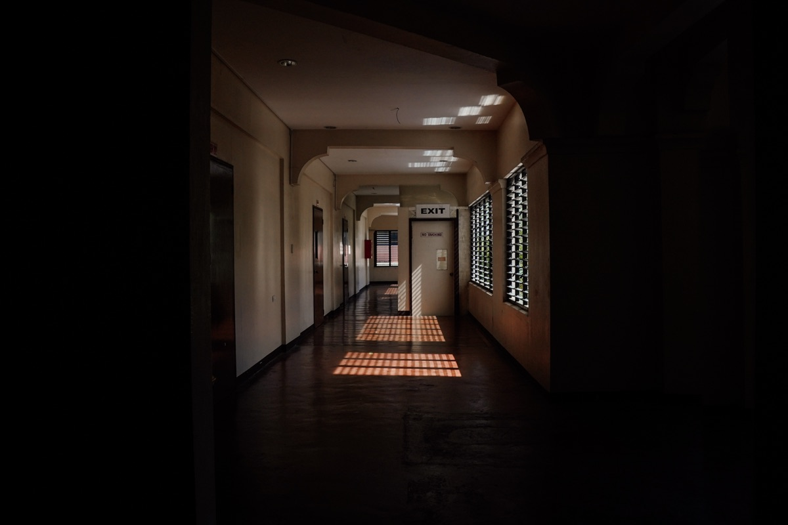
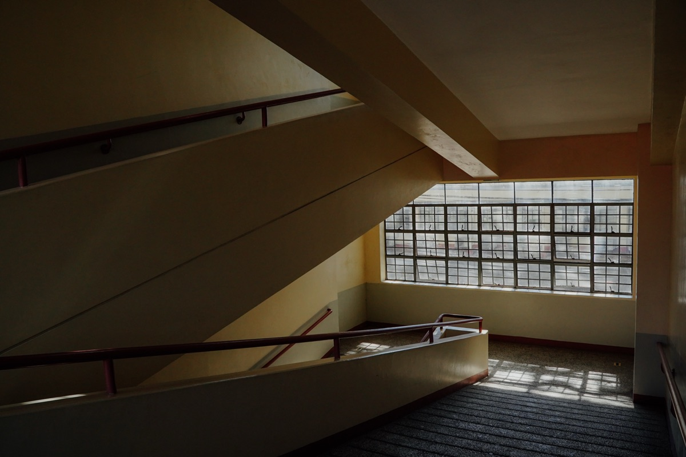
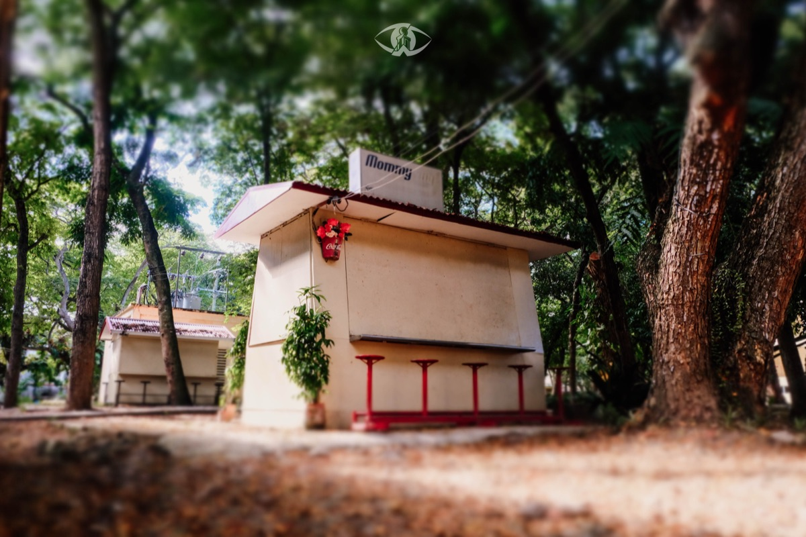
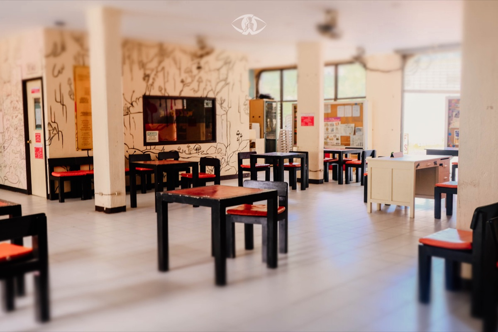
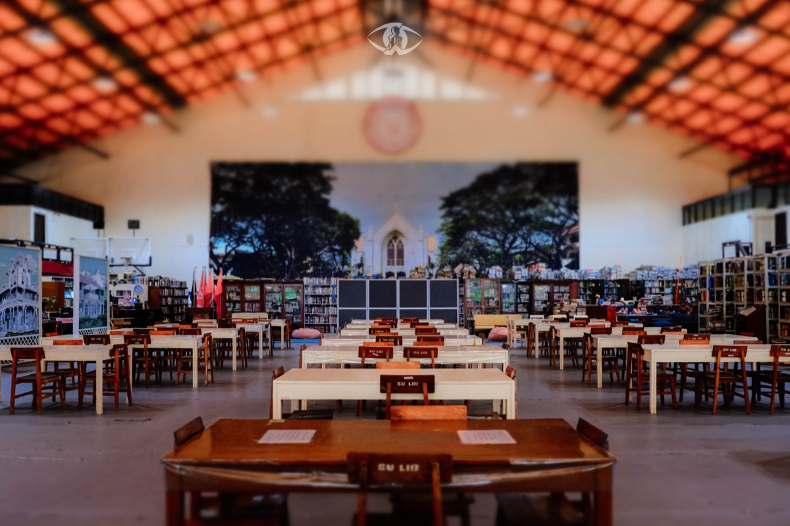

Interiors and exteriors — stairwells, libraries, hallways, and heritage buildings around campus.
A quieter set focused on architecture and interior light: a dim hallway corridor with patterned floor tiles, a stairwell lit by sunlight through a window, and a heritage building exterior with palm trees under a blue sky.
Indoors, a graffiti-covered room and a library with wooden tables under warm ceiling lighting round out the set, along with a small garden hut tucked among trees.
All 6 pieces from this collection.







PHOTOGRAPHS